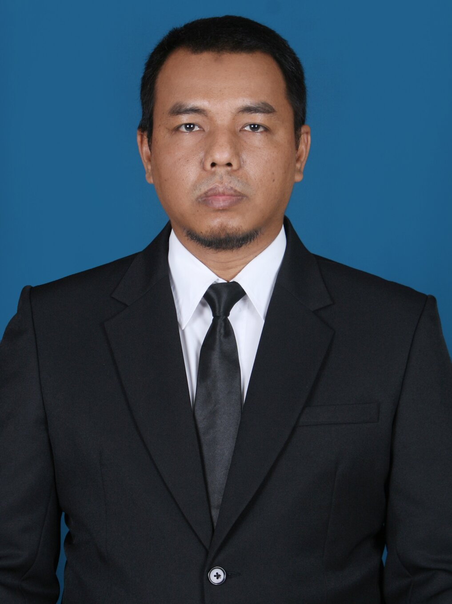
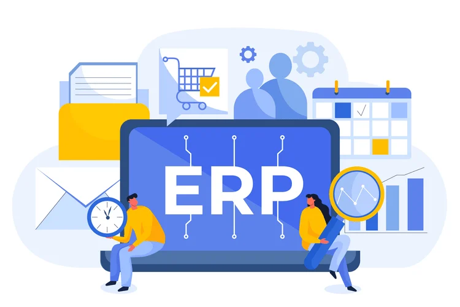
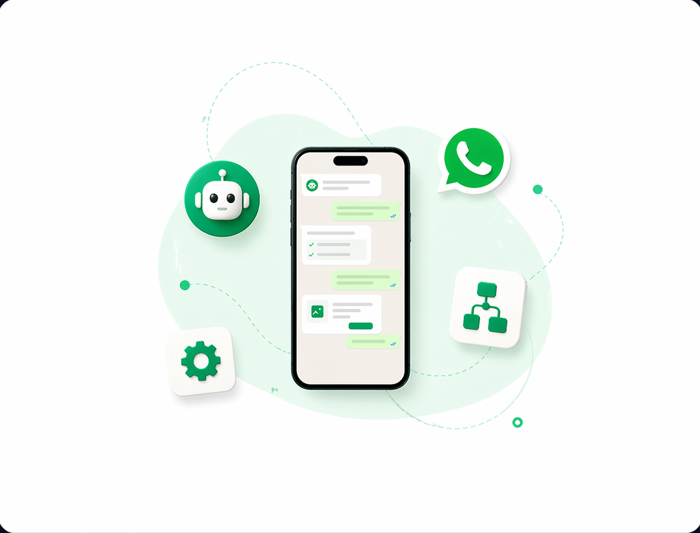
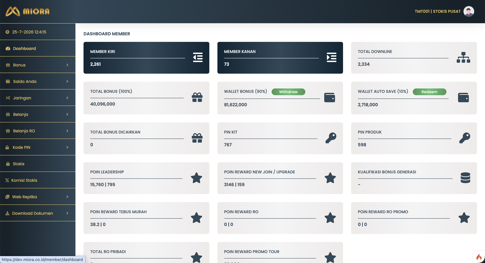
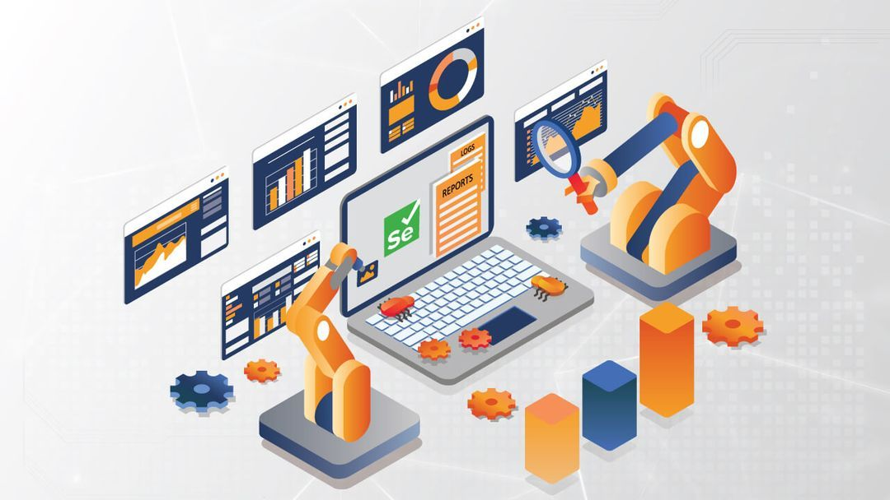
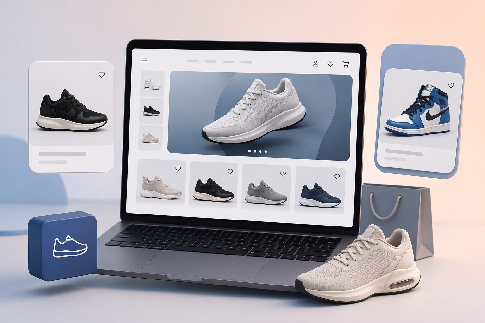
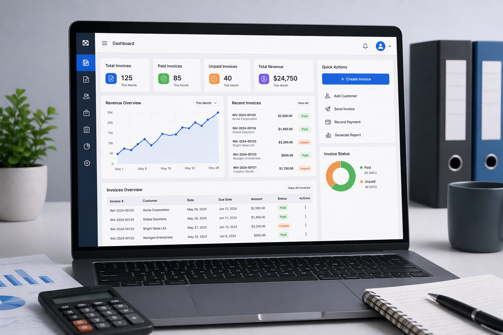

Senior Software Engineer • Backend Specialist • System Architect
Senior software developer with 20+ years experience in backend engineering, enterprise systems, ERP development and automation platforms. Specialized in designing scalable business systems and database architecture.
Designing and building enterprise-grade business systems with focus on scalable backend architecture, database design, and system integration across multiple business units. Experienced in translating complex business requirements into reliable technical solutions.
Led the development of custom ERP platforms for manufacturing and restaurant businesses. Integrated finance, inventory, production, and operational workflows into a unified system to improve operational efficiency and data accuracy.
Built automation platforms including WhatsApp automation workflows, process automation tools, and system integrations that reduce manual operations and streamline business processes.
Designed and implemented RESTful APIs, scalable backend services, and database architectures supporting business applications and system integrations across multiple platforms.
Collaborated with business stakeholders to gather user requirements, analyze operational workflows, and design structured system solutions that align with real-world business processes.
Led engineering teams in designing scalable backend systems, overseeing software architecture, development workflow, and quality assurance processes. Responsible for aligning technical implementation with business goals while ensuring system reliability and maintainability.

Custom ERP System is a tailored enterprise solution designed to streamline and integrate core business operations within a single unified platform.

Automated follow-up messaging using the whatsapp-web.js library, sending text messages, images, documents, and audio/video files to registered users regarding follow-up content that has been written and stored in the database.

This MLM Web Application is a web-based system built on a binary MLM structure, designed to manage member networks, calculate commissions, and distribute bonuses automatically with transparency.

The Web Automation system is a scheduled automation platform designed to execute recurring tasks for multiple user accounts independently. Each account operates on its own cycle, where automated processes are triggered every hour based on the last access time of the respective user.

A web-based product catalog system developed for displaying and managing shoe collections online. The application provides structured product listings, category filtering, and detailed product views to enhance user browsing experience.

A web-based invoicing platform that automates invoice creation, payment tracking, and financial reporting. The system helps businesses manage billing processes more efficiently while maintaining accurate financial records.
Email: c.purnomo@email.com
Whatsapp: +62 878-7259-2559
LinkedIn: linkedin.com/in/cahyop
GitHub: github.com/cahyopurnomo